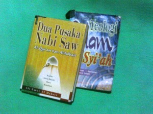

Di sela ke-sok-sibukan saya mengerjakan TAB (Tugas Akhiiiiir Banget) ini, saya tergelitik untuk ikut-ikutan ngomongin salah satu sekte Islam ini. Terutama sih, karena belakangan sering muncul di pemberitaan tentang tragedi kisruh di Sampang Madura antara warga sunni dengan warga Syiah.Walaupun bukan orang yang mengerti agama, tapi setidaknya saya cukup mengerti ajaran dan sejarah Syiah, karena pernah membaca buku-buku yang ditulis oleh para pengikut Syiah sendiri. Oya, yang saya maksud dengan Syiah dalam tulisan ini adalah sekte Syiah 12 imam, yang merupakan sekte Syiah yang paling besar pengikut dan pengaruhnya sampai sekarang.
|  |
| Beberapa buku Syiah yang saya punya, masih ada yang lain |
{kind=link}
Sikap Syiah terhadap Sunni
Dulu, saya pernah juga berkomentar tentang Ahmadiyah. Sebagai sekte yang sama-sama di luar mainstream di Indonesia. Ada perbedaan saya dalam menyikapi kedua sekte tersebut. Bagi saya, lebih mudah bersikap atas Ahmadiyah. Di kalangan Ahmadiyah jarang ditemukan pengikut yang radikal. Perdamaian Islam mainstream dengan Ahmadiyah lebih mudah.
Tapi tidak dengan Syiah. Syiah lahir di awal sejarah Islam, lahirnya pun karena pertikaian politik. Sejarah Syiah dipenuhi dengan penindasan dari penguasa saat itu terhadap kaum Syiah (karena masalah politik). Tidak heran jika Syiah menyimpan kebencian yang mendalam pada Islam mainstream sejak kelahirannya. Kata-kata cacian dari Syiah terhadap sosok-sosok terhormat dalam mainstream Islam (sunni) begitu banyak.
Respon Sunni
Respon dari kalangan Sunni terhadap Syiah, dari masa klasik hingga sekarang pada umumnya adalah menganggap Syiah telah melenceng dari Islam. Ada yang mengatakan sesat, ada juga yang mengatakan Syiah telah kafir.
Perlakuan para pemimpin negara yang berfaham Sunni terhadap Syiah berbeda-beda. Para Khalifah atau Sultan Sunni yang membenci Syiah, umumnya karena masalah politik.
Mungkinkah Berdamai?
Kondisi sekarang tidak lagi sama dengan masa dahulu. Usaha perdamaian antara Sunni dengan Syiah, telah banyak digagas oleh tokoh-tokoh Islam dunia dari kedua kubu. Sayang sekali, kalangan radikal dari keduanya sama-sama tidak suka dengan usaha perdamaian ini.
Bagi saya, usaha perdamaian antara kedua kubu adalah mutlak dan harus dilakukan, mengingat konflik keduanya telah menimbulkan banyak korban. Tapi masalahnya adalah, maukah kubu radikal Syiah menghentikan serangan/celaan pada tokoh-tokoh yang dihormati Sunni? Maukah kubu radikal sunni berdamai dengan Syiah?
Pertimbangan Sebelum Menentukan Sikap
Pertimbangan saya sebagai WNI:
- Menjalankan agama/kepercayaan adalah hak setiap orang di Indonesia.
- Menjaga persatuan adalah kewajiban setiap orang di Indonesia.
- Bahwa kewajiban harus senantiasa didahulukan daripada hak.
- Kekerasan adalah tindak kriminal.
Pertimbangan saya sebagai Muslim Sunni:
- Keyakinan bukanlah hal yang bisa dipaksakan (Laa ikraha fid diin).
- Orang yang sudah mengucap syahadat wajib dilindungi jiwa, kehormatan, dan hartanya.
- Orang kafir yang mau hidup damai dan dilindungi pemerintah, adalah wajib untuk dilindungi jiwa, kehormatan, dan hartanya.
- Antara Sunni dengan Syiah terdapat banyak perbedaan yang tidak bisa disatukan, namun juga terdapat hal-hal yang disepakati kedua kubu.
- Kewajiban muslim Sunni untuk membentengi diri dari akidah yang keluar dari garis Sunni.
Sikap Saya
- Menolak segala bentuk kekerasan yang tidak dibenarkan oleh hukum Indonesia.
- Melarang ajaran Syiah bukanlah solusi karena bertentangan dengan UUD.
- Kemerdekaan untuk mengamalkan ajaran Syiah adalah hak bagi pemeluknya, namun dibatasi oleh kewajiban menjaga persatuan.
- Kemerdekaan untuk menjaga akidah Sunni adalah hak bagi pemeluknya, namun dibatasi oleh kewajiban menjaga persatuan.
- Saya secara pribadi menyatakan kesesatan ajaran Syiah tanpa sikap memusuhi pada pemeluknya.